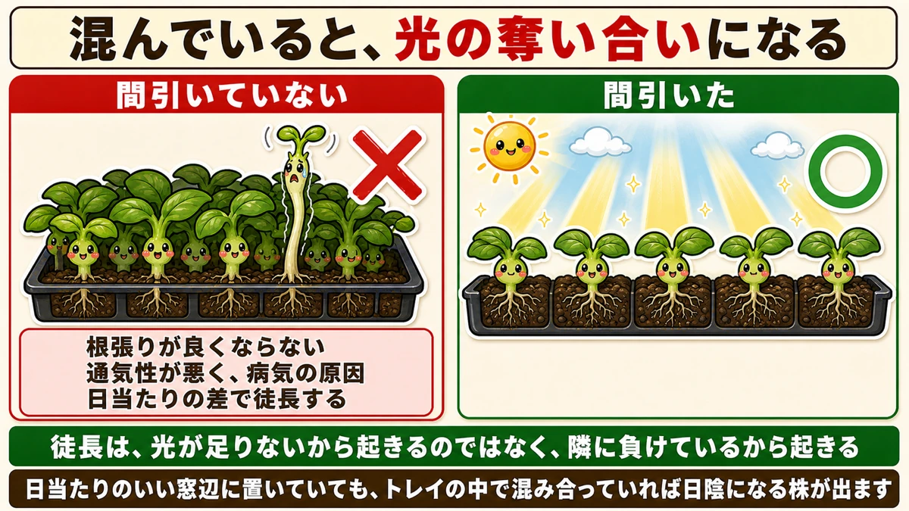
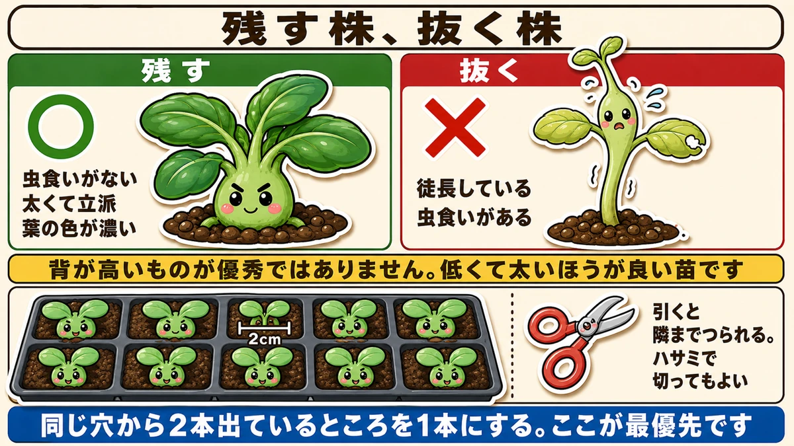
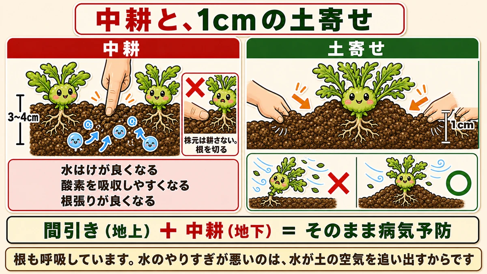
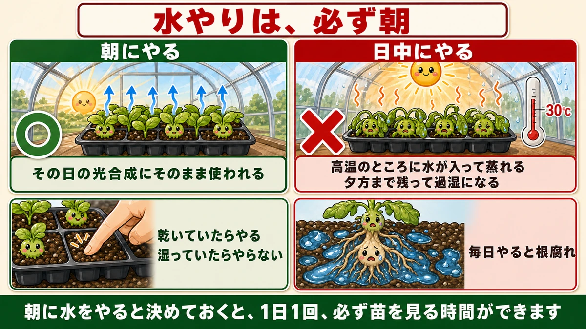

Leggy seedlings mean you thinned too late 🌱 Not too little light — too many neighbours

🌱 "They germinated, then went spindly and fell over."
🌱 "I can't bring myself to thin them."
🌱 "Surely watering is the same morning or evening?"
Hello, I'm Eiko. Eight years of growing vegetables organically and without pesticides, and a teaching licence in science.
Getting seed to germinate is one article. This one is about what happens next: how to make the seedlings sturdy.
The headline:
Seedlings go leggy because you thinned too late.
Not the feeding. Not the light levels. Crowding.
① Don't delay thinning

What this diagram says （図解の文字）
- Crowded, they fight each other for light
- ✗ not thinned — "roots don't develop", "poor airflow, so disease", "uneven light, so some stretch"
- ○ thinned
- "Stretching happens not because there's too little light, but because it's losing to its neighbour"
Thinning is the job nobody wants to do — you're pulling out seedlings you just got to come up. But delay it and three things happen.
1. The roots don't develop
Roots compete for space underground too. Tangled with the neighbour's, neither can spread properly.
2. Poor airflow, and then disease
Dense leaves mean no air movement, and trapped humidity is where fungi start.
3. Uneven light, and stretching
The big one. Plants respond to being shaded by a neighbour by concluding "I must get higher" — so the stem grows long and thin. That's legginess.
Stretching isn't caused by too little light; it's caused by losing to the plant next to it.
Stand the tray on the sunniest windowsill you have and, if the cells are crowded, some seedlings will still be in shade inside that tray. It's a density problem, not a location problem.
What to thin first
- The crowded spots
- Anywhere two came up from the same hole
Reduce same-hole pairs to one first. However carefully you space seed, some places end up doubled.
Which to keep

What this diagram says （図解の文字）
- Keep / pull
- ○ keep — "no insect damage", "thick and well grown", "deep leaf colour"
- ✗ pull — "stretched", "insect damage"
- "The tall one isn't the good one. Short and thick is the better seedling"
- 2 cm ／ "pulling drags the neighbour out too — scissors are fine"
Keep the ones that are undamaged by insects, thick and well grown, with good deep colour, and remove anything that has stretched.
People hesitate here, so: the tall one is not the superior one. The opposite. Short, thick and solid is the better seedling.
Space them 2 cm apart
In cells or a drill, thin to about 2 cm (¾ in) apart.
One caution: pull one and the neighbour comes with it, because the roots are tangled. I hold the one I'm keeping with a finger while pulling. If you'd rather be safe, cut through the base with scissors.
② Loosening the soil — the least-known job

What this diagram says （図解の文字）
- Loosening, and 1 cm drawn up to the stem
- Loosening — 3–4 cm deep — ✗ "don't loosen at the stem", "you cut the roots"
- "Better drainage" ／ "easier oxygen uptake" ／ "better rooting"
- Drawing soil up — 1 cm
- "Thinning (above ground) + loosening (below ground) = disease prevention" ／ "roots breathe too"
Do it together with thinning:
- Loosen between the plants, 3–4 cm (1½ in) deep
- With your fingers, in small quick movements
- No tool needed
Don't loosen at the stem
One rule. The roots are directly under the plant, and putting your fingers in there cuts the roots you've been growing. Only between the plants.
Why it works
- Better drainage
- Easier oxygen uptake
- Better rooting
It may surprise you, but roots breathe. Compacted soil with no air in it means roots can't. Overwatering kills roots not because water is bad but because water drives the air out of the soil.
Loosening restores the air passages.
Thinning + loosening = disease prevention
- Thinning → airflow above ground
- Loosening → air movement below ground
Both halves ventilated, which is disease prevention in itself. In a no-spray garden that matters a great deal — preventing disease is far easier than curing it.
③ Draw 1 cm of soil up and they stop falling over
Push the loosened soil up to the stems as you go:
- From both sides, toward the stem
- Sparingly — about 1 cm (½ in)
- Don't bury the plant
One centimetre, and it changes things.
Why
Seedlings fall over because the base works loose. Where a thin stem rises out of the soil, constant wind opens a gap around the roots and it starts to rock.
A little soil drawn up supports that junction. Even 1 cm moves the pivot point, so it works. It stands up to wind better, and being stable, it roots better too.
④ Water only in the morning

What this diagram says （図解の文字）
- Always water in the morning
- ○ morning — "it goes straight into that day's photosynthesis"
- ✗ midday — 30 °C — "water entering somewhere already hot makes it steamy", "too much is left by evening and it's waterlogged"
- "Water if it's dry, don't if it's damp" ／ "watering every day rots the roots"
I assumed the hour didn't matter. It does. Water seedlings in the morning, without exception.
Why morning
Water given in the morning goes straight into that day's photosynthesis. Plants photosynthesise while the sun is up, and need water to do it. Water there in the morning means a full day's use of it.
Why not midday
- Water entering an already-hot greenhouse or tunnel makes it steamy
- Too much moisture is left by evening, and it becomes waterlogged
Inside a small greenhouse it passes 30 °C (86 °F) even in early spring. Add water to that and you have a steam bath.
Not every day
Watering is not a daily obligation. Water when it's dry — touch the surface, water if it's dry, leave it if it's still damp.
Water something that's already damp, repeatedly, and the roots rot. Roots breathe; permanently soaked, they can't. Killing a plant with daily kindness is a real thing — I've done it.
Look while you water
Deciding to water in the morning gives you one guaranteed look at the seedlings every day:
- Is anything starting to stretch?
- Are there insects on the leaves?
- Is it getting crowded?
That daily look is the most effective way not to miss the moment to thin.
Moving to pots
When there are three or four true leaves and the plant has settled. A cell is small, and left there the roots circle; once they have nowhere to go, growth stops.
- Moisten the compost before lifting — dry, the roots tear
- Push up from below and take it out without breaking the root ball
- Make a hole in the pot's compost, set it in, fill around it
Don't wash or tease out the roots. At this stage they're fine enough to break on contact.
Afterwards, keep it out of direct sun and wind for two or three days. Transplanting is surgery, as far as a seedling is concerned, and it needs recovery time.
To sum up
- ✅ Leggy seedlings mean late thinning
- ✅ Stretching is losing to a neighbour, not lack of light
- ✅ Thin the crowded spots and same-hole pairs first
- ✅ Keep the short, thick ones. Tall is not superior
- ✅ 2 cm apart, and scissors are fine
- ✅ Loosen between plants 3–4 cm deep — never at the stem
- ✅ Roots breathe. Overwatering drives the air out
- ✅ Thinning + loosening = disease prevention
- ✅ 1 cm of soil to the stem and they stop falling over
- ✅ Water in the morning, and only when dry
- ✅ Pot on at three or four true leaves, without disturbing the root ball
You don't have to do all of it. Go and look at your tray: if two came up in one hole, take one out today 🌱
Thank you for reading!